A low-level C++ role at a finance company got back to me with a take-home OA. I looked the company up, realized it was HFT, and went down a rabbit hole instead of taking the OA…
I passed out that night watching Fedor Pikus’s C++ atomics, from basic to advanced [1], got partway into the memory-ordering section, and woke up wanting to write this exact post.
Going in, I’d seen atomics in multithreaded code and assumed they were “indivisible reads and writes” because of some magic instruction. I never knew why. My prior usage was a thread-task counter and a “should the loop keep running” flag. Both global, both barely thought through and probably shit code. Everything else multithreading-wise I’ve just been using mutexes.
This blog is not going to be a regurgitation of docs. I’m building atomics from the hardware up, x86–64 specifically, until we hit std::atomic and std::memory_order and can read exactly what they compile to. The thesis up front:
Atomic operations give you two separate things: atomicity and ordering. x86 does most of the ordering for free, which is exactly why it’s a trap.
Everything below runs on my machine, an Intel i7–9700K (8 cores, no SMT), gcc 15.2.0.
Cppreference [2] promises that if one thread writes an atomic object while another reads it, the behavior is well-defined. No UB, no torn values. There are three kinds of atomic operations:
That third one stopped me. How does the CPU read a value, modify it, and write it back as one indivisible step? Wikipedia [3] describes RMW (test-and-set, fetch-and-add, compare-and-swap) as one shotting a read and write in a single atomic operation. Cool. What does that mean physically?
The most useful thing I found was a Stack Overflow answer [4] quoting Linus Torvalds:
Atomic instructions bypass the store buffer or at least they act as if they do - they likely actually use the store buffer, but they flush it and the instruction pipeline before the load and wait for it to drain after, and have a lock on the cacheline that they take as part of the load, and release as part of the store - all to make sure that the cacheline doesn’t go away in between and that nobody else can see the store buffer contents while this is going on.
That “lock on the cache line” is the thread to pull. I thought atomics were lock-free, so what lock? This reads like the CPU prevents other cores from touching the same cache line for the length of the operation. Let’s look at how caches stay consistent.
The key idea is coherence, specifically cache coherence on a multiprocessor. Two cores must never see different values for the same shared line. The classic protocol is MESI, where every cache line on every core sits in one of four states:
M (modified)
This core has the only copy and it’s dirty (differs from RAM). Must be written back before anyone else reads it.
E (exclusive)
Only this core has it, and it’s clean (matches RAM).
S (shared)
Multiple cores have it, all clean.
I (invalid)
Stale. Another core modified it, this copy can’t be used.
It’s a state machine driven by two things: the core’s own r/w requests, and “snooped” requests coming across the interconnect from other cores. Roughly, reading a line you don’t have moves you I -> E/S, wanting to write moves you -> M and invalidates everyone else, getting snooped by another core’s write knocks you -> I [5]. The real machine has more edges.
The one-liner that matters: before a core can write a line, every other core has to invalidate its copy.
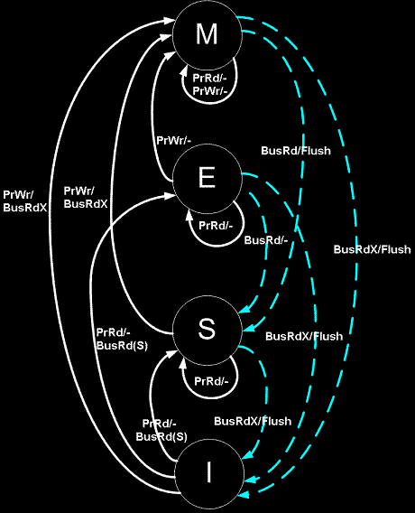
MESI state transitions
Side note: your x86 machine probably isn’t running plain MESI. Intel CPUs (including this 9700K) use MESIF, which adds a Forward (F) state. F designates one cache as the responder for read requests so you don’t get redundant responses from every sharer. AMD uses MOESI, which adds an Owned (O) state. O is dirty-but-shareable, the owner serves reads from cache to other cores without writing back to RAM, so RAM is allowed to be stale. Same shape, different optimizations. People say “MESI” the way they say “kleenex.”
If coherence makes a single core’s RMW look atomic, surely two threads both doing x++ are fine, right? MESI’s got us? Let’s test. Two threads, each incrementing a shared int a million times, print at the end. Should be 2,000,000.
#include <print>
#include <thread>
int x = 0;
void worker(void) {
for (int i = 0; i < 1000000; i++)
x++;
}
int main(void) {
std::thread t1(worker), t2(worker);
t1.join();
t2.join();
std::print("{}\n", x);
return 0;
}
$ g++ -O0 --std=c++23 mesi_naive.cpp
$ ./a.out
1047020
$ ./a.out
1006689
$ ./a.out
1046267
We all knew this would fail.. but why? Did MESI fail us?
MESI guarantees coherence, not atomicity of a read-modify-write. Coherence means you never read a stale line, it says nothing about preventing two cores from interleaving an RMW on the same value. x++ is really load, add, store, three steps even when it’s a single inc [mem] instruction (the microarchitecture does a read phase then a write phase, it’s not indivisible). The race MESI can’t stop:
core 1: load x=0 -> reg=0
core 2: load x=0 -> reg=0 # both S
core 1: reg+1=1, store x=1 # goes M, sends invalidate
core 2: ACKs invalidate on x # goes I, but reg still = 0
core 2: store reg+1=1 -> x=1 # writes 1 from stale reg!
The invalidation hits the cache line, not the register. Core 2 already pulled 0 into a register and the ALU already computed 1 on that old value. When the invalidate lands, core 2’s line goes Invalid. When core 2 then goes to store, it does pull the latest line (now 1) back into M before writing, but nothing reaches back and fixes the stale 0 sitting in its register. It overwrites the fresh 1 with 1 from its own ALU.
Race Condition
The write wasn’t lost because coherence broke. Coherence did its job. It was lost because MESI has no jurisdiction over a value that’s already been pulled into a register. What we need is to stop core 2 from even loading until core 1’s whole RMW is done.
Before we can read the manual’s line on LOCK, two things from that Linus quote need actual definitions: the store buffer and the pipeline.
The store buffer is the thing to understand. Writes land there before they hit coherent cache, same idea as buffering a string before flushing it to a socket. Writing to memory is slow even when “memory” is L1, so the core buffers stores and drains them later on one of a handful of trigger events (we’ll get the list in a sec).
The CPU doesn’t run one instruction at a time, it overlaps stages (fetch, decode, execute, writeback) the way a laundromat overlaps washing one load while drying the previous one. “Stalling the pipeline” means inserting a bubble where nothing advances until some condition holds. That’s what fences and locked ops force on stores. An instruction retires when it exits the pipe for good and its result becomes permanent.
The AMD64 manual (vol 2 rev 3.07) tells us that before completing a LOCK-prefixed instruction (1) all previous reads and writes must be to memory and (2) the locked instruction must complete before later writes [8].
Locked writes are never buffered although locked reads and writes are cacheable.
The manual also lists events that force the processor to drain its write buffer:
sfence, serializing instructions, I/O instructions, locked instructions, interrupts and exceptions, and uncacheable reads.
Quick definition since the manual is loose with the word. “Memory” here doesn’t mean DRAM, it means globally visible, committed far enough into the coherent cache hierarchy that every core can see it. The slow part isn’t reaching RAM, it’s stalling the pipeline to drain the store buffer.
Here’s the part I had to get straight. We need one core to own that cache line through the entire RMW so no other core can sneak a valid load into the middle. That’s exactly what the LOCK prefix does [6]. It piggybacks on MESI: the core takes the line into M, and refuses to give it up until the locked instruction retires. Another core can’t RFO it (request-for-ownership, the invalidate-everyone-so-I-can-write message from the MESI section) mid-flight, so the read-then-write window is sealed.
While I’m here,
XADDlooked promising. It exchanges dest and src, then writes their sum into dest [7]. One instruction, so it’s atomic, right? Nope. One instruction isn’t one atomic operation.xaddstill has a read phase and a write phase another core can interleave between. You need theLOCKprefix on it. We’ll see this.
Let’s stretch x++ into inline asm as a baseline:
void worker(void) {
for (int i = 0; i < 1000000; i++)
- x++;
+ asm("inc %0" : "+m"(x));
}
$ g++ -O1 --std=c++23 no_lock.cpp
$ ./a.out
1027212
This is, of course, still wrong. Now let’s add the LOCK prefix:
void worker(void) {
for (int i = 0; i < 1000000; i++)
- asm("inc %0" : "+m"(x));
+ asm("lock inc %0" : "+m"(x));
}
$ g++ -O1 --std=c++23 lock.cpp
$ ./a.out
2000000
Magic ヽ(°〇°)ﾉ! The disassembly of worker() is literally a “one word difference” (-g -O1 for a clean 1:1 loop):
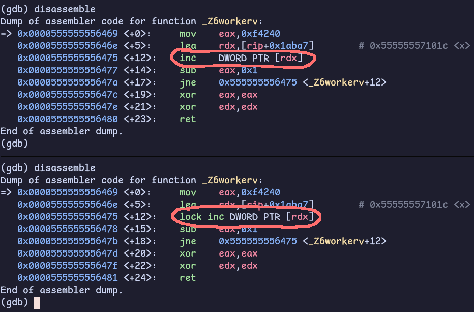
LOCK prefix disassembly
So now we can define an atomic operation: one that reads, optionally modifies, and writes as a single indivisible step, guaranteeing:
The LOCK prefix is what buys this. It asserts the processor’s LOCK# signal for the duration of the instruction, turning it atomic. It can only prefix a specific set of memory-destination instructions: ADD, INC, DEC, XADD, XCHG, CMPXCHG, and friends [11].
How the lock itself works has history. On the 486, LOCK asserted a literal bus lock, it locked the whole memory bus for the operation, which was a massive performance hit because everything touching memory had to wait. Starting with the Pentium Pro / P6, it became a cache lock: the core takes exclusive ownership of the affected cache line via the coherence protocol (line goes M/E) for the single instruction, no global bus lock needed. The bus lock only comes back if the locked memory is uncacheable, or if the access straddles a cache-line boundary (a “split lock”). Both are rare [9]. The LOCK# signal itself isn’t a register or a bit, it’s a physical signal on the interconnect [10].
One correction to a thing I believed going in. I assumed this meant atomics “aren’t really lock-free, the lock is just in hardware.” That’s wrong, and it’s a common confusion of two different meanings of “lock.” Lock-free is a progress guarantee, it means suspending any single thread can never stop the others from making progress.
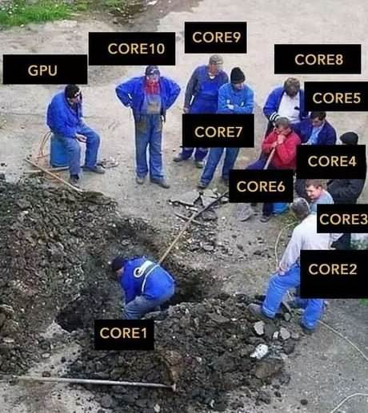
Lock meme
The LOCK prefix holds a cache line for one bounded instruction that can’t be interrupted mid-flight, so no thread can ever block another indefinitely with it. That makes lock xadd genuinely lock-free.
A mutex is not lock-free: a thread that grabs it and gets descheduled stalls everyone waiting. So “lock-free” doesn’t mean “no serialization ever happens,” it means the serialization is bounded and non-blocking. The LOCK prefix being spelled lock is a false friend.
Now that we’ve hand-rolled a (probably shit) atomic counter, let’s see how the C++ stdlib does it.
std::atomic<T> is an atomic type. Concurrent reads and writes are well-defined, and you can additionally control how surrounding non-atomic memory is ordered via std::memory_order (which connects straight back to those fence instructions.. more on that later). Cppreference also notes the standard requires every RMW to read the latest value in the modification order, so RMWs always see the freshest value [2].
std::atomic<T>works on any trivially copyableT, basically a flat block of bytes you couldmemcpy. Mostly scalars, but trivially-copyable classes count too. I won’t go down the move-semantics hole here [12].
Fedor Pikus mentioned not to write std::atomic_int x = 0;. He didn’t say why, so, tangent. If you set -std=c++11:
error: use of deleted function
‘std::atomic<int>::atomic(const std::atomic<int>&)’
std::atomic has a deleted copy constructor (atomics aren’t copyable). x = 0 is copy-initialization: it builds a temporary atomic_int from 0 via the converting constructor, then wants to copy-construct x from it, and that copy ctor is deleted. C++17’s guaranteed copy elision makes = 0 compile now, but the idiom is direct-initialization, which calls the converting ctor straight, no copy:
std::atomic_int x{}; // or x{0}
++ is overloaded but I’ll be explicit with fetch_add:
#include <atomic>
#include <print>
#include <thread>
std::atomic_int x{};
void worker(void) {
for (int i = 0; i < 1000000; i++)
x.fetch_add(1);
}
int main(void) {
std::thread t1(worker), t2(worker);
t1.join();
t2.join();
std::print("{}\n", x.load());
return 0;
}
$ g++ -O1 -std=c++23 std_atomic.cpp
$ ./a.out
2000000
Now the disassembly:
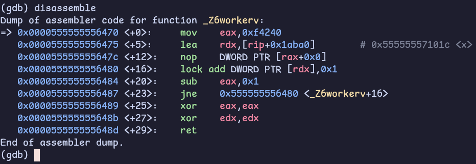
std::atomic_int disassembly
Same lock prefix. The standard library picked add over inc, but it’s the identical hardware primitive we hand-rolled. If I switch my asm to lock add too, the loops are line-for-line identical.
That
nop DWORD PTR [rax+0x0]before the loop isn’t doing anything, it’s a multi-byte NOP the compiler inserts as alignment padding to put the loop head on a 16-byte boundary so it sits cleanly in an instruction-cache line. Pure padding, never meaningfully executed.
So the most basic multithreaded counter is just the lock prefix, and std::atomic is the portable wrapper that emits it for you. Tip of the iceberg, but a real foundation.
If lock is the whole story for the counter, let’s measure it. Four cases, the first two are the wrong answers (no locking), included on purpose:
#include <atomic>
#include <benchmark/benchmark.h>
#include <thread>
// NOTE: Omitted backslashes for better syntax highlighting
#define M_BENCHMARK(name, t, e)
static void _##name(benchmark::State &s) {
for (auto _ : s) {
t x{0};
auto w = [&] { for (int i = 0; i < 1000000; i++) e; };
std::thread t1(w), t2(w);
t1.join();
t2.join();
benchmark::DoNotOptimize(x);
}
}
BENCHMARK(_##name);
M_BENCHMARK(naive, int, x++);
M_BENCHMARK(no_lock, int, asm("inc %0" : "+m"(x)));
M_BENCHMARK(lock, int, asm("lock inc %0" : "+m"(x)));
M_BENCHMARK(std_atomic, std::atomic_int, x.fetch_add(1));
BENCHMARK_MAIN();
$ g++ -g -O1 -std=c++23 benchmark.cpp -lbenchmark
$ ./a.out
Run on (8 X 4900 MHz CPU s)
CPU Caches:
L1 Data 32 KiB (x8)
L1 Instruction 32 KiB (x8)
L2 Unified 256 KiB (x8)
L3 Unified 12288 KiB (x1)
Load Average: 0.72, 0.83, 0.85
***WARNING*** CPU scaling is enabled, [...]
Benchmark Time CPU Iterations
_naive 2667488 ns 52334 ns 1000
_no_lock 2543247 ns 58533 ns 1000
_lock 31105183 ns 66661 ns 100
_std_atomic 32055394 ns 59998 ns 1000
Wall times bounce run-to-run because CPU frequency scaling is on, the relative picture is stable.
Two things fall out.
1. std::atomic matches the hand-rolled lock add within noise.
The abstraction costs nothing, it’s the same instruction.
2. The unlocked versions are ~12× faster, but not because they have “zero coherence overhead.”
That line was in my notes and it’s wrong. The cache line is contended either way, there’s coherence traffic regardless. The real difference is what the core is allowed to do with it.
Without LOCK, a store can sit in the store buffer and the core pipelines straight into the next iteration, reading its own buffered value via store-forwarding. It never has to wait for each increment to become globally visible. With LOCK, every single increment must be globally visible before the next instruction can retire, so the core can’t pipeline through it.
The lock converts a pipelined burst into a synchronous round-trip per op. And the same buffering plus non-atomicity that makes the unlocked version fast is exactly what makes it lose ~half the counts.
On the wall vs CPU split. It’s tempting to read the ~40ms wall vs ~60µs CPU as “cores stalled waiting for cache-line ownership.” Don’t. Google benchmark’s CPU time is the benchmarking thread’s CPU time, and that thread spends most of its life asleep in
join()waiting on the workers.
We covered the atomicity half. The lost-increment problem is fixed by LOCK because no other core can interleave a load between our read and our write. Done. Now the other axis.
First, terms. Program order is the order operations appear in your source, what you wrote. The CPU and the memory model don’t promise to execute or make visible memory operations in that order.
“Program order” and “weak vs strong ordering” are different things. Program order is source order, weak vs strong describes the memory model’s reordering rules. x86 is strongly ordered, it’s a TSO (total store order) machine, more on that in a sec (:
We already saw a flavor of disorder in the unsynchronized counter. The deeper version: on a multicore machine, one thread can observe another thread’s writes happening in a different order than they were issued, and different reader threads can even disagree with each other.
The mechanism is the store buffer again. Stores land in a per-core FIFO before they reach the coherent cache. The issuing core reads its own buffered writes (store-forwarding), but other cores can’t see them until they drain. So a store you “did” can be invisible to everyone else for a while.
std::memory_order is how you express ordering portably, it specifies how regular and atomic accesses get ordered around an atomic operation [16]. The three levels we’ll see in this section:
seq_cst - the default, gives a single total order all threads agree onrelease / acquire - pairwise happens-before between one writer and one readerrelaxed - atomicity only, no ordering constraintsStart from the bottom. relaxed is atomicity with zero ordering, which makes it the perfect instrument for watching a reorder happen in the wild.
The cleanest demonstration is SB (store buffering), straight out of the x86-TSO paper [13]. Two locations, both 0:
# Proc 0 # Proc 1
MOV [x] <- 1 MOV [y] <- 1
MOV EAX <- [y] MOV EBX <- [x]
# Allowed Final State: Proc 0: EAX=0 OR Proc 1: EBX=0
Here’s what happens. The two processors each have their own store buffers and share the same memory. Nothing new. Same model we’ve been working with.
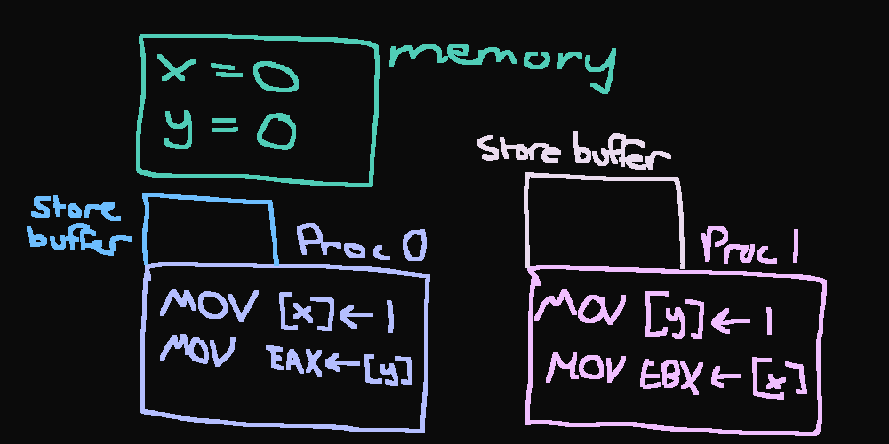
store buffer 1
Now, p0 does x = 1. That write goes into core 0’s store buffer, not memory.
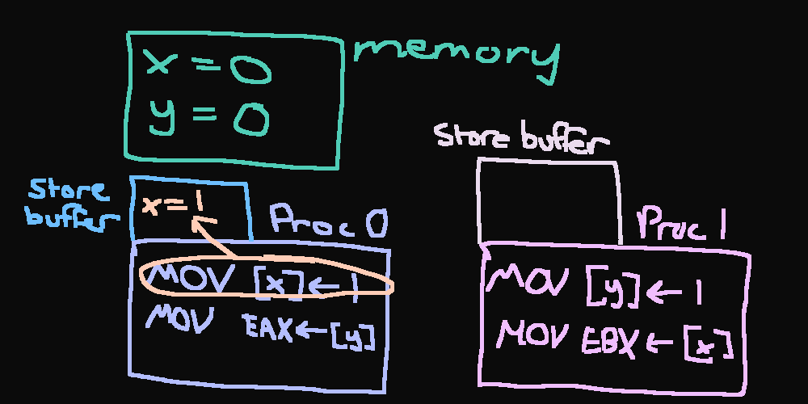
store buffer 2
p1 does y = 1…
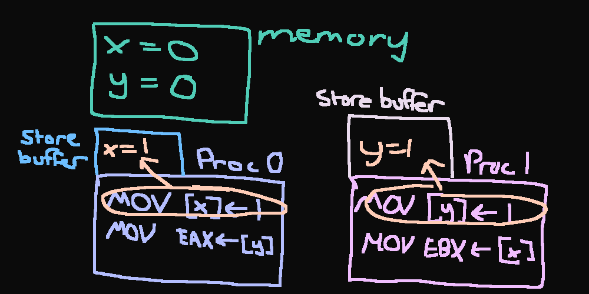
store buffer 3
p0 reads y. Core 1’s y = 1 is still sitting in core 1’s store buffer, so core 0 reads y = 0 from memory (core 1 reads x = 0).
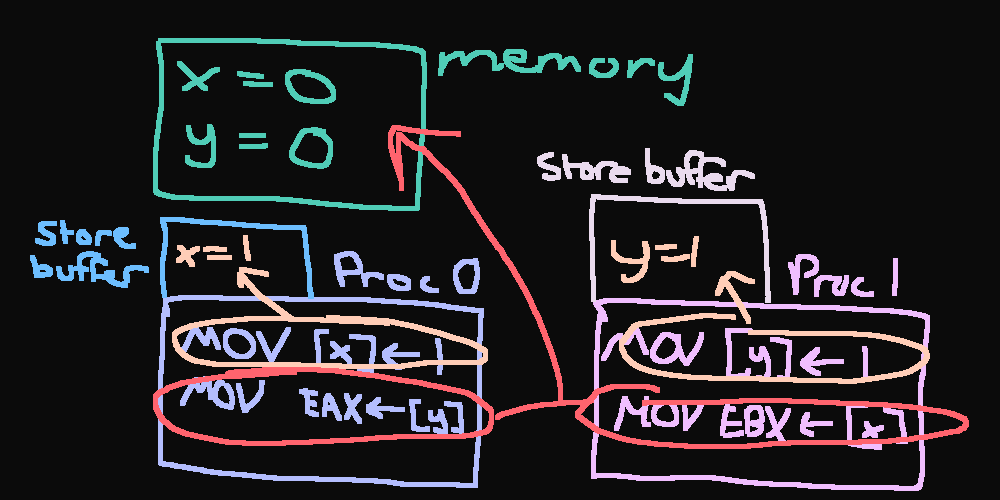
store buffer 4
Both buffers drain afterward. Final state: EAX = 0, EBX = 0. Wtf.
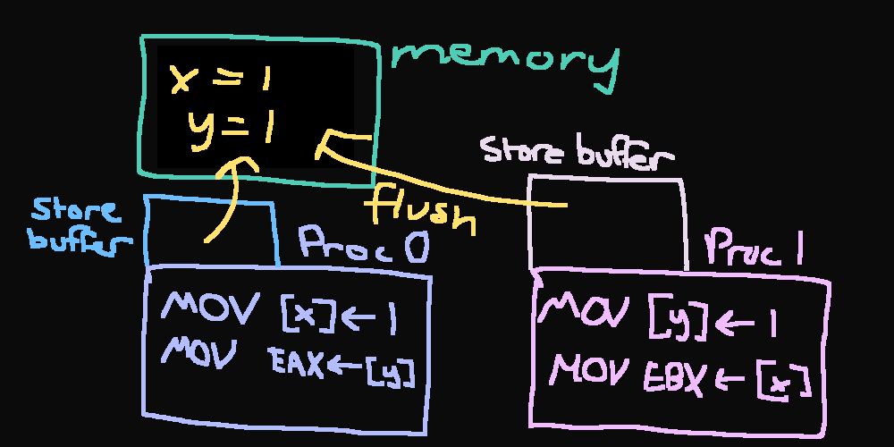
store buffer 5
Under sequential consistency, EAX == 0 && EBX == 0 is impossible. One store must come first, so at least one load should see a 1. But on real x86 it’s observable: both stores sit in their respective store buffers while both loads go to memory and read stale zeros.
This is “relaxed-memory behavior,” and on x86 it’s the one reorder TSO permits, StoreLoad (a store followed by a load to a different address). C++ version:
#include <print>
#include <thread>
int x = 0, y = 0;
int eax = -1, ebx = -1;
void p0(void) {
x = 1;
eax = y;
}
void p1(void) {
y = 1;
ebx = x;
}
int main(void) {
int i = 0;
while (1) {
x = y = 0;
eax = ebx = -1;
std::thread t0{p0}, t1{p1};
t0.join();
t1.join();
i++;
if (eax == 0 && ebx == 0)
break;
}
std::print("after {} iterations: eax={}, ebx={}\n", i, eax, ebx);
return 0;
}
$ g++ -g -O1 --std=c++23 sb.cpp -o sb.out
$ ./sb.out
after 54396 iterations: eax=0, ebx=0
This program is undefined behavior: x and y are plain ints touched by two threads with no atomic operation, which is a data race in the C++ model.
The 9700K has no SMT, so the two threads land on separate physical cores, each with its own store buffer. Across runs, a wide range of iterations until it was caught was observed. It feels random, but absolutely happens.
It “works” here purely because of how x86 lowers plain loads and stores. I’m keeping it because it’s the clearest possible illustration, but the standards-correct way to write SB is with relaxed atomics for the shared locations:
#include <atomic>
#include <print>
#include <thread>
std::atomic_int x{}, y{};
int eax = -1, ebx = -1;
void p0(void) {
x.store(1, std::memory_order_relaxed);
eax = y.load(std::memory_order_relaxed);
}
void p1(void) {
y.store(1, std::memory_order_relaxed);
ebx = x.load(std::memory_order_relaxed);
}
int main(void) {
int i = 0;
while (1) {
x.store(0);
y.store(0);
eax = ebx = -1;
std::thread t0{p0}, t1{p1};
t0.join();
t1.join();
i++;
if (eax == 0 && ebx == 0)
break;
}
std::print("after {} iterations: eax={}, ebx={}\n", i, eax, ebx);
return 0;
}
$ g++ -g -O1 --std=c++23 sb_atomics.cpp -o sb_atomics.out
$ ./sb_atomics.out
after 5613 iterations: eax=0, ebx=0
Now let’s look at the disassembly of each:
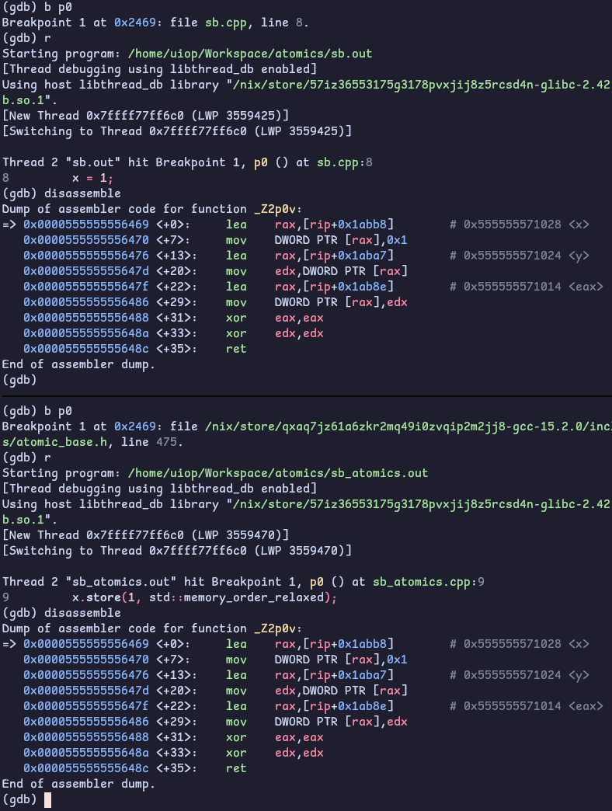
SB Disassembly
It’s identical (O‿o) x.store(1, std::memory_order_relaxed) is mov DWORD PTR [x], 1 (vice versa with y not shown) on both versions. No lock, no fence, the exact instructions the UB version emitted.
The correct code and the broken code are the same binary. That’s the trap. The racy version doesn’t run slower or look different here, it’s the same movs, so it passes every test you run on this machine and you ship it. But one of these is a program the standard defines, and the other is a program the compiler is allowed to do anything to the next time you bump a flag, a gcc version, or an inlining decision. Same binary today is not same binary tomorrow. And that’s only half the trap, the other half shows up in release/acquire below, where annotations that cost zero instructions on x86 cost real ones on ARM.
The manual’s line is that when ordering must be strictly enforced, you use barrier instructions, lfence, sfence, mfence, to force memory ops to proceed in program order. mfence specifically [14] serializes all loads and stores: everything before it becomes globally visible before anything after it. These are “memory barriers” or “fences,” a standard concurrency primitive [15]. (serialize, cpuid, iret are also serializing, but they’re heavier. The fences are the cheap, targeted option.)
The fix: drop an mfence between the store and the load on each thread, so the store buffer drains before the load reads.
void p0(void) {
x.store(1, std::memory_order_relaxed);
+ asm volatile("mfence" ::: "memory");
eax = y.load(std::memory_order_relaxed);
}
Disassembly confirms the mfence lands right after mov DWORD PTR [rax], 0x1. Left it looping for 10+ minutes, the SB state never showed up again.
The
"memory"clobber is load-bearing too, it’s a compiler barrier telling gcc not to reorder the load above the asm. Themfenceis the hardware barrier. You need both.
Hand-rolled asm isn’t portable. The 1:1 equivalent of a bare mfence is a standalone fence:
- asm volatile("mfence" ::: "memory");
+ std::atomic_thread_fence(std::memory_order_seq_cst);
Here’s the interesting bit, the disassembly of the seq_cst fence:
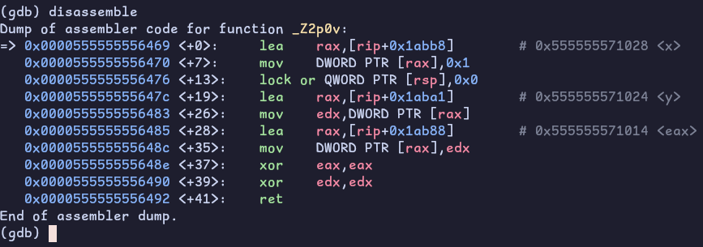
Fence disassembly
It’s not an mfence, it’s a lock or of zero into the top of the stack. That’s a dummy locked no-op: or [rsp], 0 changes nothing, but the LOCK prefix triggers the full store-buffer drain and StoreLoad barrier we need. Gcc picks this because on most microarchitectures a dummy locked op is cheaper than mfence while giving the same StoreLoad ordering.
Remember,
lockcan only prefix specific instructions, andoris one of the cheapest.
seq_cst is where shit gets real, a real barrier instruction, real cost. But most synchronization doesn’t need a global total order, it needs pairwise ordering between one writer and one reader. That’s release/acquire, and the canonical example is message passing: a producer fills a payload then flips a flag, a consumer waits on the flag then reads the payload.
#include <atomic>
#include <print>
#include <thread>
int data = 0;
std::atomic_bool ready{false};
void producer(void) {
data = 42; // (1) write payload
ready.store(true, std::memory_order_release); // (2) release
}
void consumer(void) {
while (!ready.load(std::memory_order_acquire)); // (3) acquire
std::print("{}\n", data); // guaranteed 42
}
int main(void) {
std::thread t0(producer), t1(consumer);
t0.join();
t1.join();
return 0;
}
Note that
databeing a plainintis UB!!
$ g++ -O0 --std=c++23 rel_acq.cpp
$ ./a.out
42
The guarantee comes from a happens-before chain. (1) is sequenced-before the release store (2) in program order, the release store synchronizes-with the acquire load (3) because they’re the same atomic and the load reads what the store wrote, (3) is sequenced-before the read of data. Chain it together and data = 42 happens-before the consumer’s read. No mfence, no seq_cst, no torn read. You guessed it, now we’re gonna disassemble it:
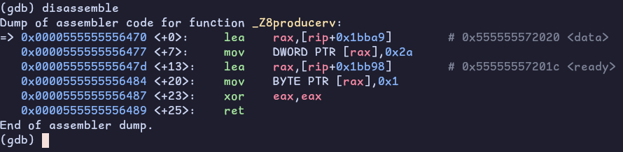
rel-acq-disassembly producer
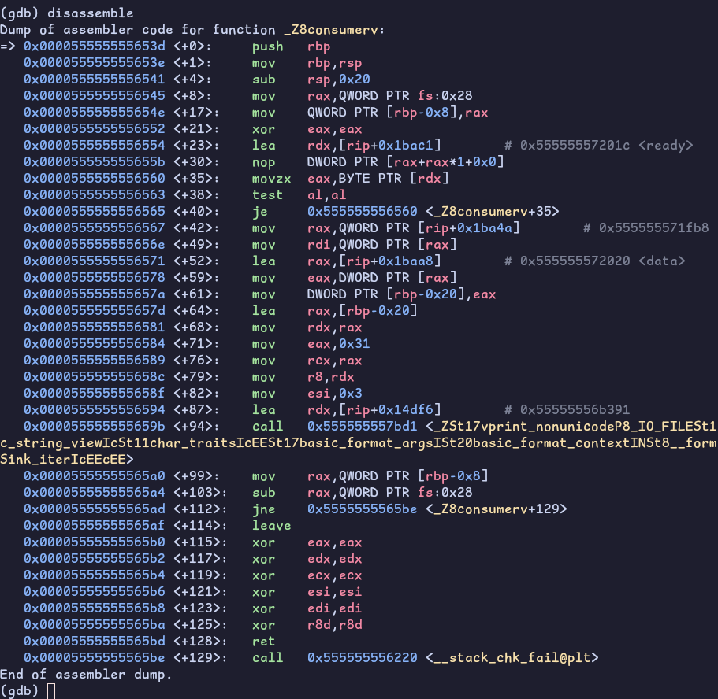
rel-acq-disassembly consumer
The release store is a plain mov. The acquire load is a plain movzx in the spin loop. No lock, no mfence, nothing extra. That’s what “free on x86” means: TSO already gives you store-release and load-acquire semantics for plain movs, so the ordering annotation costs zero instructions. Compare that to the seq_cst fence above, which cost a lock or. Same header, completely different price depending on which reorder you’re fighting.
One honesty note: on x86 you can’t make this demo fail at runtime even with relaxed instead of acquire/release. TSO won’t let the consumer observe data
== 0. The proof that the ordering matters is twofold, the asm shows it’s free, and the portability argument: on a weakly-ordered machine like ARM, downgrading to relaxed here genuinely breaks: which is the entire reason the annotation exists [16].
I’m gonna be running this on my Raspberry Pi 5. Before we get into it check out my overkill case B)
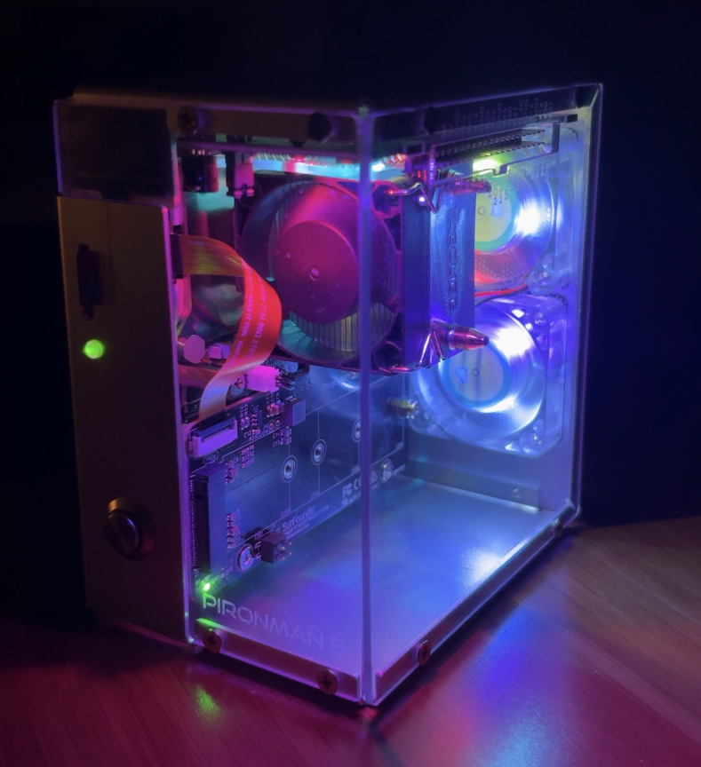
rpi5
Anyways… here’s the program I’ll be using for this demonstration:
#include <atomic>
#include <iostream>
#include <thread>
alignas(64) std::atomic_int data{0};
alignas(64) std::atomic_bool ready{false};
int observed = -1;
void producer(void) {
data.store(42, std::memory_order_relaxed);
ready.store(true, std::memory_order_relaxed);
}
void consumer(void) {
while (!ready.load(std::memory_order_relaxed));
observed = data.load(std::memory_order_relaxed);
}
int main(void) {
int i = 0;
while (1) {
data.store(0);
ready.store(false);
observed = -1;
std::thread t0(producer), t1(consumer);
t0.join();
t1.join();
i++;
if (observed == 0)
break;
}
std::cout << "iterations: " << i << "\n";
return 0;
}
Couple of things to note here. First, the data payload has been upgraded to an std::atomic_int. With the payload relaxed-atomic, the whole program is defined, so when it prints 0 nobody can wave it off as “that’s just UB bro.”
Second, alignas(64) on both. Remember when we went over cache lines earlier? Well since data and ready are adjacent globals, they would be on the same cache line (64 bytes). So when the consumer fetches ready, it gets data in the same line - even with relaxed loads. Aligning them to 64 byte boundaries makes it so they get their own line.. meaning different coherence states, held by different cores, and transferred independently. This makes the window for the consumer to see ready==true and data==0, since the lines arrive in different order, actually has a chance to open.
$ g++ -O1 demo.cpp
$ ./a.out
iterations: 127290
You know the drill, here’s the disassembly:
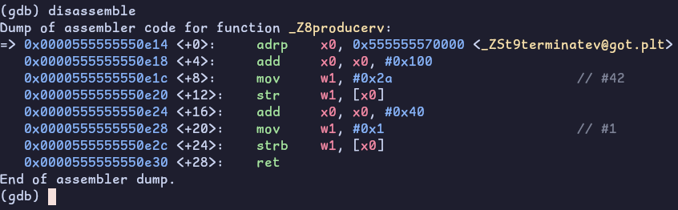
ARM Producer Relaxed
Both stores are bare str/strb. The CPU is free to retire them out of order to the coherence gods. ready=true can become visible to another core before data=42 does.
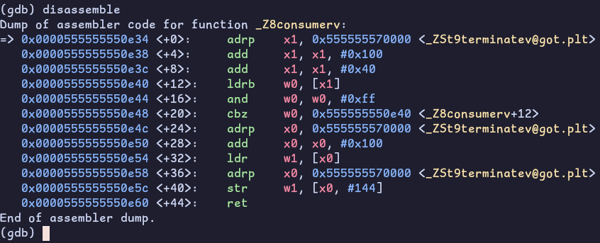
ARM Consumer Relaxed
Same deal on the consumer side. Bare ldr, no acquire. Nothing prevents this load from being satisfied from a stale cache line state while ready’s line already arrived.
The C++ memory model permits this.
std::memory_order_relaxedmakes no ordering guarantees between different variables. The compiler emitted the weakest legal sequence. ARM’s weak memory model exposes it.
I’ve been running the same program on x86 this entire time since I’ve been writing this section. 11 minutes now and nothing. x86 TSO prevents this from happening!
Now let’s make some changes to our program:
void producer(void) {
data.store(42, std::memory_order_relaxed);
- ready.store(true, std::memory_order_relaxed);
+ ready.store(true, std::memory_order_release);
}
void consumer(void) {
- while (!ready.load(std::memory_order_relaxed));
+ while (!ready.load(std::memory_order_acquire));
observed = data.load(std::memory_order_relaxed);
}
We can see in the disassembly that strb changed to stlrb and ldrb to ldarb! This simple instruction change that’s free for my 9700K costs actual hardware on the RPI.
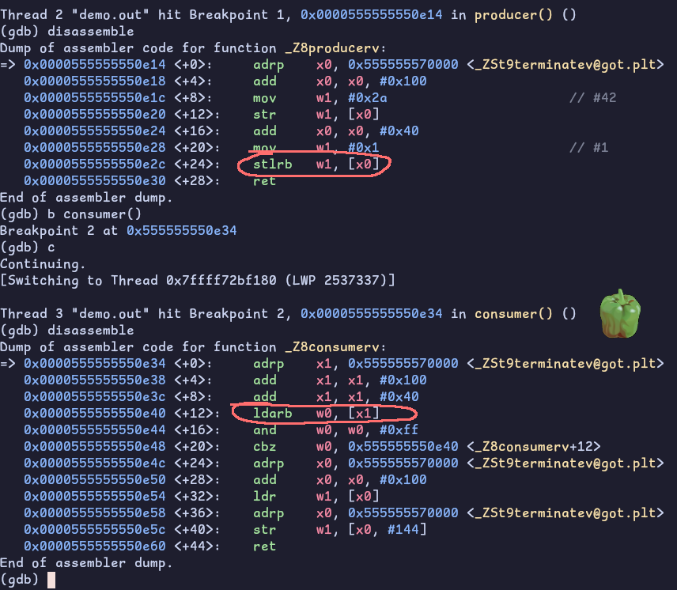
ARM Producer Release Consumer Acquire
Double check your memory ordering by using
-fsanatize=thread(TSan). It checks memory accesses at runtime by catching threads touching the same data without proper synchronization.
Check out herdtools7. Its a tool suite to test weak memory models if you want something a little more. Definetly out of scope for this blog!
So std::memory_order isn’t one knob, it’s a choice of strength and cost. Find a full list at [17]. The following are briefs on the ones I used.
Atomicity only, no ordering, and the cheapest. The counter could’ve used this, fetch_add doesn’t need ordering to count right (the join is what publishes the final value to main).
Pairwise happens-before between a release and the acquire that reads it. Free plain movs on x86, TSO already disallows LoadLoad, LoadStore, and StoreStore reorders.
A single total order all threads agree on (the default). StoreLoad is the one reorder x86 permits, so this is the only level that costs a barrier (a lock or, or mfence).
consume exists too, but skip it. It’s deprecated in C++26 and every real compiler just promotes it to acquire because the dependency tracking it specified was never implemented correctly.
Atomicity is the LOCK prefix, bounded exclusive ownership of a cache line through an entire RMW, so no update is lost and no value is torn. Ordering is a separate axis, how an operation constrains the memory accesses around it.
Store-release and load-acquire are just plain movs here, and the only reorder the hardware permits is StoreLoad, which a single fence fixes. The danger is that code which is subtly wrong under the C++ memory model still runs correctly on your x86 box, then explodes on ARM. The annotations aren’t decoration, they’re what makes the code portable and what tells the compiler the truth about your intent.
It emits the LOCK prefix for atomicity, and exactly the barriers (often zero, on x86) your chosen memory_order requires. We watched it compile to the same lock add we hand-rolled, and its seq_cst fence to a lock or standing in for our mfence.
lock xadd is lock-free, its serialization is bounded and can’t block other threads indefinitely. A mutex isn’t, because a suspended lock-holder stalls everyone. That’s the real distinction behind “atomics are faster than a mutex,” not “no locks anywhere.”
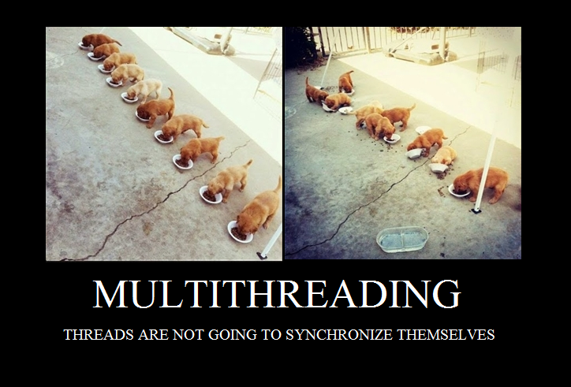
Multithreading
No way I’ll be assessed in the OA about any of this but honestly this rabbit hole was probably more beneficial (and fun!) to me than grinding LeetCode.
std::atomicLOCK prefixXADDLOCK# signalLOCK-prefixable instructionsmfencestd::memory_order